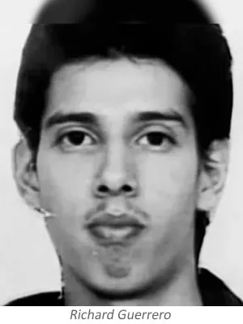
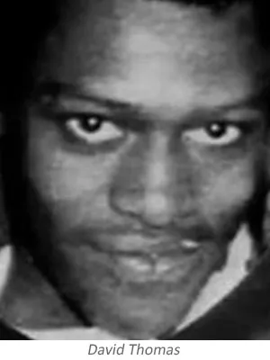

Jeffrey Lionel Dahmer fue el primer hijo de Lionel y Joyce Dahmer, su madre sufría de ataques de ansiedad y tendencias suicidas; Tenía un hermano menor llamado David. Sus padres siempre fueron muy amorosos y le dieron siempre todo lo que pudieron para suplir sus necesidades, pero era un hogar problemático y disfuncional.
Su padre era químico y su labor lo obligó a trasladarse con su familia constantemente. La familia compró una casa en Bath, Ohio, donde Jeffrey pasó gran parte de su infancia y adolescencia. En su tiempo libre iba a pescar con su padre. Dahmer tenía gusto por buscar animales arrollados, los llevaba al patio y los abría para ver qué había dentro. Empezó a sentir placer sexual al ver los sesos de los animales muertos.

“(Jeffrey) los abría para examinar el interior de los animales. Hizo lo que la mayoría de los hombres jóvenes hacemos cuando las hormonas se activan tremendamente, y estaba haciendo algo sexual con ellos. Y creo que las conexiones neuronales, ya sabes, hicieron contacto y conectaron a Jeff", dijo su padre quien, al ser científico, le mostró cómo preservar los cuerpos, técnicas que después utilizó para preservar en su casa partes de los cuerpos de sus víctimas.
Al pasar de los años su personalidad fue cambiando tanto que se convirtió en un ser introvertido, aunque en la secundaria, trabajó en el periódico y jugó al tenis. Era considerado por las personas que lo rodeaban como alguien “raro”. Luego, empezó a tener problemas con el alcohol. Sus padres se divorciaron, Jeffrey se fue a vivir con su padre y David con su madre. Su padre se casó nuevamente. Asistió a la universidad e ingresó en la Ohio State University, pero sus problemas de alcohol no le permitieron avanzar académicamente. En 1979 su padre lo convenció para ir al ejército: fue enviado a Alemania, pero de nuevo el alcoholismo provocó su expulsión.
Después de vivir un tiempo en Florida, volvió a su casa en Ohio. Al regresar a su país se fue a vivir solo a un apartamento en Milwaukee. Tuvo un problema con los padres de un menor de edad al que le pagó 50 dólares por posar para unas fotos, pero luego comenzó a tocarlo, el niño huyó asustado. En consecuencia, los padres del chico realizaron la denuncia y el 30 de enero de 1979, Dahmer fue encontrado culpable, fue enviado a prisión por 10 meses.
Luego del entierro de un joven de su comunidad, Dahmer sintió el deseo de satisfacer su hambre sexual con el cadáver del adolescente, pero a causa del clima falló.
La película “Mi amigo Dahmer”
En Mi amigo Dahmer, el autor Derf Backderf repasa la adolescencia de uno de sus compañeros de clase, que resultó ser nada más y nada menos que Jeffrey Dahmer.
El autor de esta novela gráfica, Derf Backderf, compartió con Dahmer sus años de instituto y refleja en esta obra precisa y documentada su progresivo descenso a los infiernos. Para Backderf, “Jeff” era una figura mucho más compleja de lo que reflejan los medios, alguien con quien compartió clases, pasillos y paseos en coche.
Mi amigo Dahmer es la historia de la juventud de su protagonista, y de su incapacidad para empatizar con los demás, vista a través de los ojos de uno de sus compañeros de clase. Derf Backderf (periodista de formación) describe la personalidad desfasada de Dahmer, fascinada por los animales muertos y mortificada por su atracción por los hombres. Una obra fascinante y perturbadora a la vez.
El propio Dahmer llegó a asegurar, antes de morir en la cárcel, que “éste es el gran final de una vida malgastada, y el resultado final es abrumadoramente deprimente... La historia de una vida patética, enferma y miserable, nada más”.
Las fotos del anuario escolar “decapitado”
Un viejo compañero de clases de Dahmer llamado Mike Krukal compartió una foto grupal en un anuario donde el criminal serial aparece de una manera singular, lo que dispara una explicación sobre la historia que existe detrás de esta imagen.Krukal muestra la fotografía del grupo y dice en el documental: "La foto más famosa de nuestro anuario es una de las bromas de Dahmer, y es esta que está aquí". En ella es posible ver, casi en el centro del escena, entre las filas de estudiantes, a uno de los alumnos que aparece con la cabeza completamente cubierta por una mancha tinta de color negro. Se trata del joven Dahmer en un inquietante registro de esa época.
El excompañero de clases del criminal explica lo que sucedió que tiene que ver con bromas que realizaba Dahmer: “En nuestro último año, tomaron fotografías de todos los grupos, de los deportivos, los clubes y todo lo demás. Y Jeff Dahmer apareció en fotos de grupos de los que no era miembro”.
Para Krukal, la "más divertida" de estas ocurrencias de Dahmer fue la que consistió en colarse en la foto grupal de la Sociedad de Honor Nacional, que estaba integrado por los alumnos más brillantes e inteligentes de la institución.
“Jeff Dahmer no estaba en ese grupo académicamente, pero sí se metió en la fotografía, y creo que por eso el presidente de la Sociedad lo 'descabezó', y así quedó la foto en todos los anuarios con un cuerpo sin cabeza”, explicó su compañero de promoción.
“Cuando escuché que Dahmer fue arrestado por alguna causa, lo primero en lo que pensé fue en esa fotografía -continúa Krukal-, que vista desde el día de hoy resulta inquietante, por el hecho de mirarla y saber que esta persona, la que está justo en el medio y sin cabeza, es el asesino Jeffrey Dahmer”.
Crímenes
Steven Hicks (18 años):
Mientras conducía su auto se encontró a Steven Hicks quien le pidió que lo llevara en su auto, ya que iría a un concierto. Dahmer solía recoger a personas que solían pedir un aventón en las carreteras para ligar y quizá tener relaciones sexuales con ellos. Sin embargo, se dio cuenta que a Hicks no le interesaba tener nada con él, así que Dahmer lo golpeó dos veces en la cabeza con una pesa de 5kg y luego lo estranguló, desmembró e introdujo el cuerpo sin vida en una bolsa para tirarlo en el vertedero. A medio camino la policía lo detuvo porque estaba conduciendo de manera indebida, pero sin ninguna sospecha del homicidio. La policía no se percató de la situación y simplemente lo multaron por conducir fuera de su carril.Dahmer se arrepintió de tirar el cuerpo, y volvió a su casa. El asesino decidió ultrajar el cuerpo y realizar actos obscenos en él. Luego, guardó las partes del cadáver en una tubería de la casa. Meses después, destruyó los huesos y los esparció en la maleza.
Por un tiempo se sintió arrepentido y acudió a la iglesia, igualmente dejó el alcohol. Vivió de este modo por casi diez años, no obstante, volvió a beber y empezó a frecuentar lugares de ambiente gay. En 1986 fue detenido por exhibicionismo público. Intentó desenterrar a un joven muerto hacía unos días, para disfrutar de su cuerpo.
Steven Tuomi (25 años):
En septiembre de 1987 conoció a Steven Tuomi, un hombre homosexual. Luego de departir un par de copas decidieron ir a una habitación de hotel. Dahmer no recuerda lo que sucedió, solo que cuando despertó a la mañana descubrió que estaba muerto. Confundido compró una maleta, en la que lo metió, y lo llevó al sótano de la casa de su abuela. Allí violó al cadáver, lo desmembró y lo tiró a la basura. Lo que consternó al mundo fue su proceder: hirvió y blanqueó la cabeza para colgarla en su habitación como una especie de trofeo.
James Doxtator (14 años):
Dahmer comenzó a ofrecer dinero a chicos para tener sexo, por ejemplo, le ofreció 50 dólares a James Doxtator, un menor de catorce años que se encontró en una parada de autobús. Dahmer lo estranguló y le realizó los mismos vejámenes que hizo con el cadáver de Steven Tuomi.
Richard Guerrero (22 años):
Richard Guerrero conoció a Jeffrey Dahmer en las afueras de un bar, ahí fue cuando Dahmer le hace la misma oferta de posar desnudo por dinero. Guerrero aceptó, ya cuando estaban en el sótano, Dahmer le dio somníferos y lo estranguló. Luego abusó sexualmente del cuerpo de la víctima. 
Keison Sinthasomphone (13 años):
Dahmer abusó sexualmente de Keison Sinthasomphone (13 años), y estuvo un año en la cárcel.
Anthony Sears (26 años):
Dahmer conoció a Anthony Sears en un bar. Anthony era un joven adulto el cual soñaba con ser modelo. Le ofreció dinero para sacarle unas fotografías y lo llevó a la casa de su abuela donde lo estranguló, violó su cadáver y lo desmembró. Su modus operandi era siempre el mismo. Los asesinatos sucedían cuando sus amantes se negaban a quedarse en la casa. Dahmer le cortó la cabeza y sus genitales para conservarlos, ya que Anthony se le hacía muy atractivo.
Raymond Smith (33 años):
Raymond se desempeñaba como trabajador sexual. Dahmer le ofreció 50 dólares para que se fuese con él a su casa. Al llegar lo drogó con somníferos y los ahorcó. Dahmer opta por tomarle fotos al cuerpo de la víctima, luego lo descuartizó. Decide guardar la cabeza de Raymond Smith junto a la de Anthony Sears.
Edward Smith (27 años):
Edward y Dahmer ya se conocían previamente, pues Edward había intentado entablar una amistad con él. Dahmer decide asesinarlo, descuartizarlo y almacenar las partes del cuerpo de la víctima en el congelador hasta que se descompusieran.
Ernest Miller (22 años):
La muerte de Ernest fue por degollamiento. Luego su asesino decide descuartizarlo, disolver la carne en ácido. Dahmer conservó los huesos en su closet, también los bíceps para luego consumirlos.
David Thomas (23 años):
Le dio drogas en una bebida y pastillas para dormir. Lo descuartizó y aparentemente también conservó el cráneo de David Thomas. 
Curtis Straughter (19 años):
Curtis fue drogado, ahorcado, descuartizado. Las partes de su cuerpo fueron disueltas en ácido. Dahmer guardó las manos, cabeza y genitales de Curtis Straughter.
Errol Lindsey (19 años):
Dahmer decide con esta víctima experimentar. Drogó y luego taladró la cabeza de Errol para echarle a su cerebro ácido clorhídrico. Cuando Errol Lindsey despertó, le comenta a su victimario que le duele la cabeza, así que Dahmer decidió estrangularlo y decapitarlo. Decide quedarse con la piel de la víctima, pero se descompuso.
Anthony Hughes (31 años):
Dahmer y Anthony Hughes se conocieron en un bar gay. Hughes era sordomudo, y su asesino lo convenció de realizarse unas fotos por 50 dolares. Fue drogado y ahorcado. Dahmer conservó su cuerpo por un tiempo, luego lo descuartizó y disolvió su cuerpo en ácido, excepto su cabeza.
Konerak Sinthasomphone (14 años):
Konerak era hermano de Keison Sinthasomphone, el niño que fue abusado por Dahmer. Le realizó unas trepanaciones en el cráneo a Konerak Sinthasomphone para inyectarle ácido en el cerebro; su intención al realizar las trepanaciones era convertirlos en una especie de “zombies” y tener el control absoluto sobre sus cuerpos. El joven logró huir, cuando Dahmer salió a comprar licor, las vecinas de Jeffrey Dahmer vieron a este adolescente desorientado y desnudo, decidieron darle aviso a su tía y contactar a la policía.Dahmer lo persiguió, pero no contó con que la policía estaba al tanto de la situación. Dahmer argumentó que el joven era su amante de 19 años y que estaba alcoholizado por lo que no podía hablar y era mejor llevarlo al apartamento. Sinthasomphone fue estrangulado ese día. El asesino guardó el cráneo de Konerak.
Matt Turner (20 años):
Su asesino recogió a Matt en una parada de buses. Lo ahorcó y lo descuartizó. Dahmer decidió almacenar partes de su cuerpo en el congelador para consumirlo luego.
Jeremiah Weinberger (23 años):
Dahmer y Jeremiah iban a pasar un fin de semana juntos. En ese tiempo, su asesino lo droga, le taladra el cerebro y decide inyectarle agua hirviendo. Jeremiah tuvo que aguantar ese sufrimiento hasta que falleció al segundo día.
Oliver Lacy (24 años):
Repitiendo su modus operandi, Dahmer le ofrece dinero a Oliver a cambio de posar para unas fotos. Tuvieron relaciones sexuales, luego su asesino decide drogarlo con cloroformo. Lo estranguló y mantuvo relaciones sexuales con su cadáver. Almacenó su cabeza y corazón en el congelador.
Joseph Bradehoft (25 años):
Dahmer ahorcó a Joseph, y recostó su cuerpo en su cama, en la cual permaneció dos días. Luego decidió descuartizarlo, guardó su torso y cabeza en la nevera.
Tracy Edwards:
Su última víctima logró salir con vida de esta macabra situación al escapar del apartamento con unas esposas: Tracy Edwards. La policía decidió revisar la vivienda y descubrieron varias fotografías de cadáveres, restos humanos y una cabeza en el congelador, de inmediato, el 22 de julio de 1991, fue detenido.La policía había recibido constantes llamadas de los vecinos de Dahmer, pero nunca actuó. Es inquietante la culpabilidad que tuvieron a causa de la negligencia por parte de la policía, pues hasta en una oportunidad pudieron salvar la vida de un niño de 14 años, pero decidieron creerle al asesino, que en palabras más, palabras menos, era un blanco viviendo en un barrio de afroamericanos. La policía vio a un joven inconsciente y tras lo dicho por Jeffrey Dahmer, lo devolvieron al apartamento del asesino serial.
Luego de su arresto, cada día que pasaba de allanamiento se encontraban más cuerpos mutilados, cráneos, y huesos. El detenido se declaró culpable con atenuante de enajenación mental, para ser condenado a una cárcel especial para enfermos mentales, pero el atenuante fue finalmente rechazado. El jurado entonces lo declaró mentalmente sano y por consecuencia fue finalmente sentenciado a 15 Cadenas Perpetuas consecutivas (957 años de cárcel).
Fue entrevistado por el perito en perfiles criminales del FBI, Robert K. Ressler en el Columbia Correctional Institute en Portage. Este famoso experto coincidió en que no podía quedar en libertad. Sin embargo, destacó que debía ser internado en un hospital psiquiátrico y no en una cárcel común. Dahmer admitió haber devorado los bíceps de uno de sus asesinados. Señaló que se masturbaba ante los trozos humanos y que conservaba las cabezas de aquellos que consideraba hermosos. Además, esto le daba una sensación de compañía.
Juicio
La seguridad del juicio de Jeffrey Dahmer fue diferente a cualquier juicio celebrado anteriormente en la historia de Milwaukee. Se hicieron esfuerzos para asegurar que Dahmer estuviera a salvo de posibles amenazas en la sala del tribunal. Se usó un perro para olfatear cualquier explosivo mientras todos eran revisados minuciosamente antes de ingresar a la sala del tribunal, frente a un detector de metales y una inspección humana.Una vez en la sala del tribunal, Dahmer fue separado de la audiencia por una barrera de vidrio / acero a prueba de balas que tenía dos metros y medio de altura.
De los 100 asientos disponibles, 23 eran para periodistas, 34 para las familias de las víctimas de Dahmer y los 43 restantes para espectadores públicos.
Perfil psicológico de Jeffrey Dahmer
Según algunos especialistas, su diagnóstico psiquiátrico es trastorno límite de la personalidad, trastorno esquizotípico y psicótico delirante. Delirio místico y delirio de control.Trastornos psicopatológicos, co-morbidos y parafilias:
- Sadismo.
- Antropofagia.
- Necrofilia.
- Fetichismo.
- Pedofilia.
Factores endógenos:
- Anomalías adquiridas.
- Compulsividad sexual.
- Homosexualidad reprimida.
- Estados depresivos.
Factores exógenos:
- Problemas de crianza: la adicción y problemas mentales de su madre, la figura autoritaria de su padre y las creencias religiosas de su abuela.
- La relación de sus padres y la carencia parental de ambos con sus hijos.
- Los cambios de residencia.
- Aislamiento, introversión y apatía.
- Alcoholismo
Muerte de Jeffrey Dahmer
Luego de varios meses aislado las autoridades carcelarias decidieron dejarlo comer con los presos y realizar algunas tareas de limpieza. Mientras realizaba algunas labores en compañía de Christopher Scarver, un esquizofrénico afroamericano, y con Jesse Anderson, quien había asesinado a su esposa y culpado a un hombre negro. Se desató una pelea entre ellos; Dahmer y Anderson terminaron heridos de gravedad. Dahmer murió de camino al hospital el 28 de noviembre de 1994. Scarver dijo que golpeó a Dahmer dos veces en la cabeza con una barra de metal en el salón de ejercicios físicos.Scarver confesó que asesinó a Jeffrey porque “Dios me dijo que lo hiciera”. Se dice que Christopher Scarver había leído en el periódico la noticia sobre todas las atrocidades cometidas por Dahmer, así que guardó un recorte de él y luego lo usó para confrontar a Jeffrey Dahmer antes del altercado.
Películas / Series basadas en Jeffrey Dahmer
- “The Secret Life: Jeffrey Dahmer” (1996) - Protagonizada por Carl Crew.
- “Dahmer, el carnicero de Milwaukee” (2002) - Protagonizada por Jeremy Renner.
- “Raising Jeffrey Dahmer” (2006) - Protagonizada por Rusty Sneary.
- “Dahmer vs. Gacy” (2010) - Protagonizada por Ford Austin.
- “Mi amigo Dahmer” (2017) - Protagonizada por Ross Lynch.
- “Monster: The Jeffrey Dahmer Story” (2022) - Protagonizada por Evan Peters.